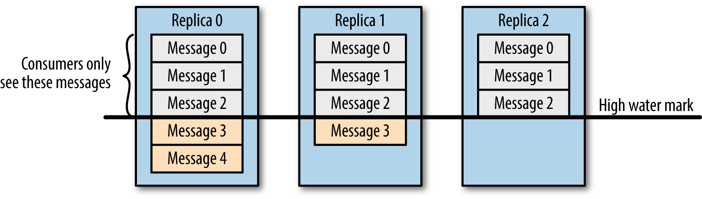

数据可靠性
Kafka 作为一个商业级消息中间件，消息可靠性的重要性可想而知。本文从 Producter 往 Broker 发送消息、Topic 分区副本以及 Leader 选举几个角度介绍数据的可靠性。
Topic 分区副本
在 Kafka 0.8.0 之前，Kafka 是没有副本的概念的，那时候人们只会用 Kafka 存储一些不重要的数据，因为没有副本，数据很可能会丢失。但是随着业务的发展，支持副本的功能越来越强烈，所以为了保证数据的可靠性，Kafka 从 0.8.0 版本开始引入了分区副本（详情请参见 KAFKA-50）。也就是说每个分区可以人为的配置几个副本（比如创建主题的时候指定 replication-factor，也可以在 Broker 级别进行配置 default.replication.factor），一般会设置为3。
Kafka 可以保证单个分区里的事件是有序的，分区可以在线（可用），也可以离线（不可用）。在众多的分区副本里面有一个副本是 Leader，其余的副本是 follower，所有的读写操作都是经过 Leader 进行的，同时 follower 会定期地去 leader 上的复制数据。当 Leader 挂了的时候，其中一个 follower 会重新成为新的 Leader。通过分区副本，引入了数据冗余，同时也提供了 Kafka 的数据可靠性。
Kafka 的分区多副本架构是 Kafka 可靠性保证的核心，把消息写入多个副本可以使 Kafka 在发生崩溃时仍能保证消息的持久性。
Producer 往 Broker 发送消息
如果我们要往 Kafka 对应的主题发送消息，我们需要通过 Producer 完成。前面我们讲过 Kafka 主题对应了多个分区，每个分区下面又对应了多个副本；为了让用户设置数据可靠性， Kafka 在 Producer 里面提供了消息确认机制。也就是说我们可以通过配置来决定消息发送到对应分区的几个副本才算消息发送成功。可以在定义 Producer 时通过 acks 参数指定（在 0.8.2.X 版本之前是通过 request.required.acks 参数设置的，详见 KAFKA-3043）。这个参数支持以下三种值：
- acks = 0：意味着如果生产者能够通过网络把消息发送出去，那么就认为消息已成功写入 Kafka 。在这种情况下还是有可能发生错误，比如发送的对象无能被序列化或者网卡发生故障，但如果是分区离线或整个集群长时间不可用，那就不会收到任何错误。在 acks=0 模式下的运行速度是非常快的（这就是为什么很多基准测试都是基于这个模式），你可以得到惊人的吞吐量和带宽利用率，不过如果选择了这种模式， 一定会丢失一些消息。
- acks = 1：意味若 Leader 在收到消息并把它写入到分区数据文件（不一定同步到磁盘上）时会返回确认或错误响应。在这个模式下，如果发生正常的 Leader 选举，生产者会在选举时收到一个 LeaderNotAvailableException 异常，如果生产者能恰当地处理这个错误，它会重试发送悄息，最终消息会安全到达新的 Leader 那里。不过在这个模式下仍然有可能丢失数据，比如消息已经成功写入 Leader，但在消息被复制到 follower 副本之前 Leader发生崩溃。
- acks = all（这个和 request.required.acks = -1 含义一样）：意味着 Leader 在返回确认或错误响应之前，会等待所有同步副本都收到悄息。如果和 min.insync.replicas 参数结合起来，就可以决定在返回确认前至少有多少个副本能够收到悄息，生产者会一直重试直到消息被成功提交。不过这也是最慢的做法，因为生产者在继续发送其他消息之前需要等待所有副本都收到当前的消息。
根据实际的应用场景，我们设置不同的 acks，以此保证数据的可靠性。
另外，Producer 发送消息还可以选择同步（默认，通过 producer.type=sync 配置） 或者异步（producer.type=async）模式。如果设置成异步，虽然会极大的提高消息发送的性能，但是这样会增加丢失数据的风险。如果需要确保消息的可靠性，必须将 producer.type 设置为 sync。
Leader 选举
在介绍 Leader 选举之前，让我们先来了解一下 ISR（in-sync replicas）列表。每个分区的 leader 会维护一个 ISR 列表，ISR 列表里面就是 follower 副本的 Borker 编号，只有跟得上 Leader 的 follower 副本才能加入到 ISR 里面，这个是通过 replica.lag.time.max.ms 参数配置的，具体可以参见 《一文了解 Kafka 的副本复制机制》。只有 ISR 里的成员才有被选为 leader 的可能。
所以当 Leader 挂掉了，而且 unclean.leader.election.enable=false 的情况下，Kafka 会从 ISR 列表中选择第一个 follower 作为新的 Leader，因为这个分区拥有最新的已经 committed 的消息。通过这个可以保证已经 committed 的消息的数据可靠性。
综上所述，为了保证数据的可靠性，我们最少需要配置一下几个参数：
- producer 级别：acks=all（或者 request.required.acks=-1），同时发生模式为同步 producer.type=sync
- topic 级别：设置 replication.factor>=3，并且 min.insync.replicas>=2；
- broker 级别：关闭不完全的 Leader 选举，即 unclean.leader.election.enable=false；
数据一致性
这里介绍的数据一致性主要是说不论是老的 Leader 还是新选举的 Leader，Consumer 都能读到一样的数据。那么 Kafka 是如何实现的呢？

假设分区的副本为3，其中副本0是 Leader，副本1和副本2是 follower，并且在 ISR 列表里面。虽然副本0已经写入了 Message4，但是 Consumer 只能读取到 Message2。因为所有的 ISR 都同步了 Message2，只有 High Water Mark 以上的消息才支持 Consumer 读取，而 High Water Mark 取决于 ISR 列表里面偏移量最小的分区，对应于上图的副本2，这个很类似于木桶原理。
这样做的原因是还没有被足够多副本复制的消息被认为是“不安全”的，如果 Leader 发生崩溃，另一个副本成为新 Leader，那么这些消息很可能丢失了。如果我们允许消费者读取这些消息，可能就会破坏一致性。试想，一个消费者从当前 Leader（副本0） 读取并处理了 Message4，这个时候 Leader 挂掉了，选举了副本1为新的 Leader，这时候另一个消费者再去从新的 Leader 读取消息，发现这个消息其实并不存在，这就导致了数据不一致性问题。
当然，引入了 High Water Mark 机制，会导致 Broker 间的消息复制因为某些原因变慢，那么消息到达消费者的时间也会随之变长（因为我们会先等待消息复制完毕）。延迟时间可以通过参数 replica.lag.time.max.ms 参数配置，它指定了副本在复制消息时可被允许的最大延迟时间。